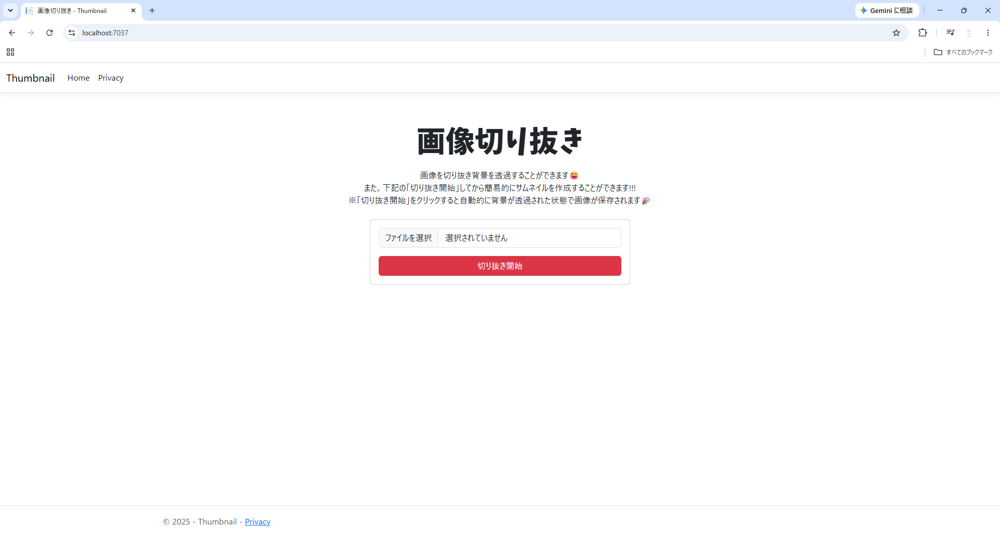
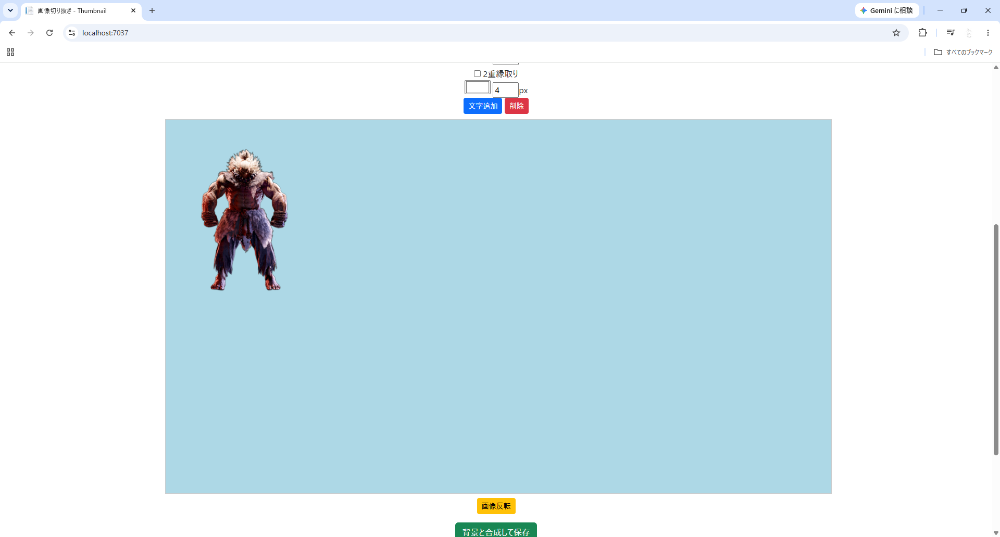
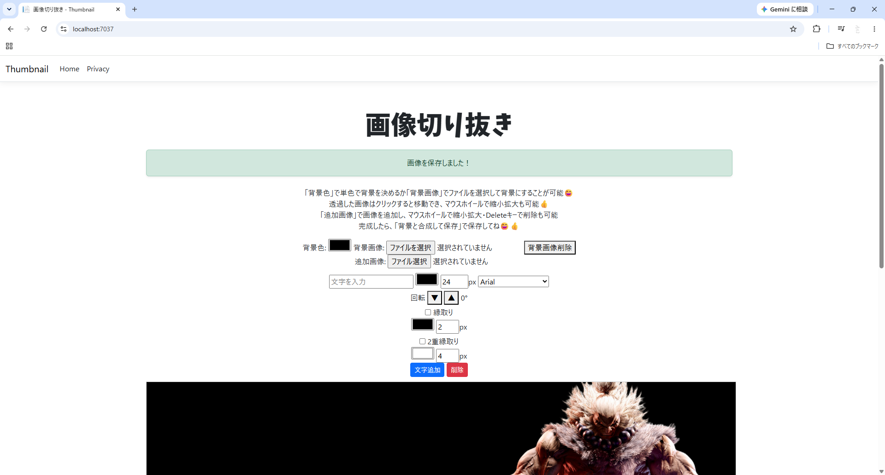
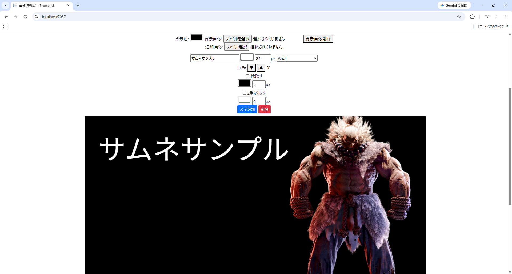

サムネイル画像編集Webアプリ
Pythonによる画像処理とASP.NET Core MVC（C#）を組み合わせて開発したWebアプリです。
背景透過・画像編集・文字編集をブラウザ上で完結できるようにしています。
概要
サムネイル作成を効率化するための画像編集Webアプリです。
開発のきっかけ
動画のサムネイルを作成する際は、背景透過、画像編集、文字入力などを複数のソフトで行う必要があり、 作業効率が悪いと感じていました。そこで、これらの作業を一つのアプリケーションで完結できるようにすることを目的として開発しました。
また、学習している Python と C# を組み合わせた開発に挑戦し、 それぞれの特徴を活かしたシステム構成を学ぶことも、この作品を制作した目的の一つです。
使用技術
| 技術 | 用途 |
|---|---|
| ASP.NET Core MVC | Web画面の構築、画像アップロード、画面遷移 |
| C# | サーバー側処理、Pythonスクリプトの実行 |
| JavaScript | 画像・文字の編集、ドラッグ操作、Canvas保存 |
| Python | 背景透過、画像処理 |
| rembg | AIによる背景透過 |
| MediaPipe | 人物・顔の検出、自動トリミング処理 |
| Pillow | 画像の加工・編集 |
| NumPy | 画像データの配列処理 |
開発環境
| OS | Windows 11 |
|---|---|
| IDE | Visual Studio 2022 |
| 言語 | C# / Python / JavaScript / HTML / CSS |
| フレームワーク | ASP.NET Core MVC |
| ライブラリ | rembg / MediaPipe / Pillow / NumPy |
| その他 | GitHub / 生成AI（設計・実装支援） |
システム構成
ブラウザ
画像アップロード
編集画面
ASP.NET Core MVC（C#）
・画面表示
・画像保存
・Pythonの実行
Python
・rembg
・MediaPipe
・Pillow
・NumPy
JavaScript
・画像編集
・文字編集
・Canvas保存
完成画像
PNG画像として保存
機能一覧
- AIによる背景透過
- 人物の自動トリミング
- 画像のドラッグ移動
- マウスホイールによる拡大・縮小
- 画像の左右反転
- 背景色変更
- 背景画像設定・削除
- 追加画像の配置・削除
- 文字追加・編集
- フォント変更
- 文字サイズ変更
- 文字色変更
- 文字回転
- 二重縁取り
- Canvasによる画像保存
画面イメージ




工夫した点
- Pythonによる画像処理とC#によるWebアプリケーションを連携させ、それぞれの役割を分けた構成にしました。
- JavaScriptを用いて画像や文字をリアルタイムで編集できるUIを実装し、操作性を意識しました。
- Canvasを利用して編集内容をそのままPNG画像として保存できるようにしました。
- 生成AIを活用して設計や実装案を検討しながら、動作確認・修正・改善を繰り返し、各機能の仕組みを理解しながら完成させました。